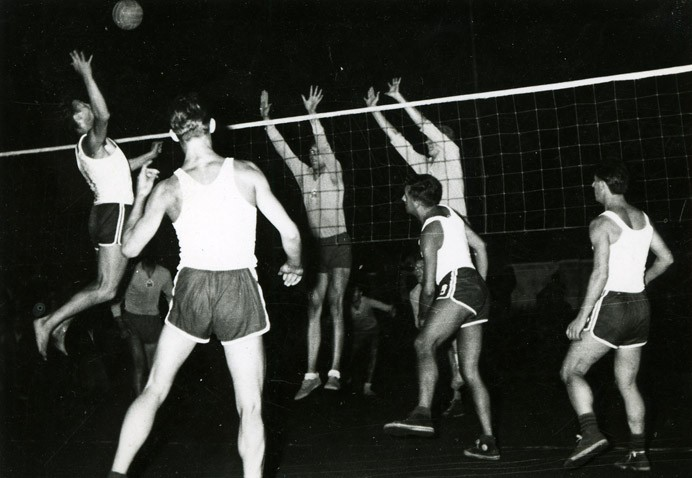
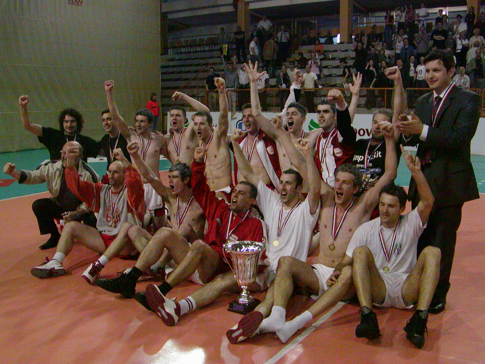

Odbojka
Klubovi
Odbojkaški klub Sloboda
u sastavu RSD Sloboda osniva se ženski odbojkaški klub

Odbojkaški klub Tekstilca
Odbojkaši varaždinskog Tekstilca 1946. osvajaju titulu prvaka okruga te igraju na finalnom saveznom turniru u Sarajevu. Tekstilac je član Hrvatske lige i osvajač više naslova prvaka. 1952. je osnovana i ženska odbojkaška momčad Tekstilca. Sve do 1960. redovito nastupaju u Hrvatskoj ligi gdje nekoliko puta osvajaju naslov prvaka i povremeno igraju u Saveznoj ligi-

Odbojkaški klub Varaždin
1957. Odobjkaški klub Tekstilac mijenja ime u OK Varaždin. U samostalnoj Hrvatskoj klub nastupa u europskom Kupu kupova 1994. Naslove prvaka Hrvatske klub osvaja u sezonama 2003/2004. i 2004/2005.